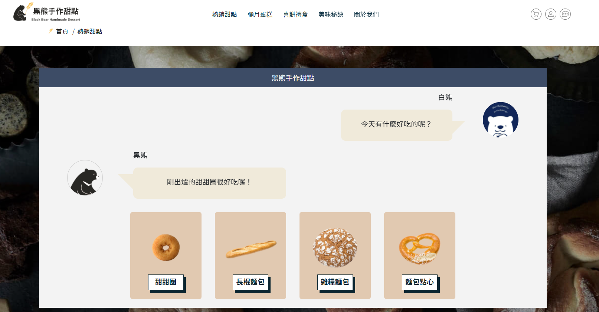

工作經驗
-
軟體工程師、PM
瑞精工科技股份有限公司
- 以JavaScript撰寫程式，設計API，處理資料內容和串接。
- 使用Node-RED（視覺化IoT開發工具）進行開發，規劃PostgreSQL資料庫。
- 管理專案進度，確保團隊達成每兩週更版的交付目標。
- 規劃網站功能，協助網頁介面優化，撰寫規格文件，測試功能。
- 定期和客戶會議，針對使用情況和需求，提升使用者體驗。
-
電商平台PM
好物市集(電商平台)
- 負責蔬果農產專區業務開發和行銷，2018年專區業績成長率達78%。
- 經營FB、LINE@、電子報等社群行銷內容。
- 主動協助網站改版，紀錄頁面和使用者提出的問題，追蹤修改進度。
- 因應緊急重大客訴，果斷判斷，並執行補救措施、撰寫公關信函 ，弭平危機。
-
產地記者、顧客關係管理PM
果物配(新創電商品牌)
- 走訪台灣各地開發可合作果農，維護和果農的關係，並撰寫產地行銷故事。
- 彙整客訴狀況，即時提出改善方案，協助各部門提升產品品質，訂閱制客戶留存率提升7%。
- 負責建立會員制度專案，包含規劃制度、設計行銷內容、監控進度、營運，提高顧客忠誠度。
- 規劃網站功能，協助網頁介面優化，撰寫規格文件，測試功能。
- 負責調漲價格、轉換金流服務專案，降低顧客流失。
作品
-
黑熊手作甜點
- 網站功能：展示商店特色、購物車、客製化商品。
- 技術：HTML、CSS、JavaScript。

-
Ocean Food餐廳(資策會團體專題)
- 網站功能：線上訂位點餐、客製化料理、投票、討論區等功能。
- 技術：前端使用HTML、CSS、JavaScript，後端使用MySQL、PHP，並用Git進行版本控制。
- 擔任組長一職，安排專案進度，帶領組員完成專案。
- 負責內容：前台部分，負責製作首頁、訂位點餐之購物車功能、協助客製化料理及撈取投票排行榜資訊；後台部分，負責資料庫整合、後台公版製作、航程管理、訂單管理和訂單明細查詢。